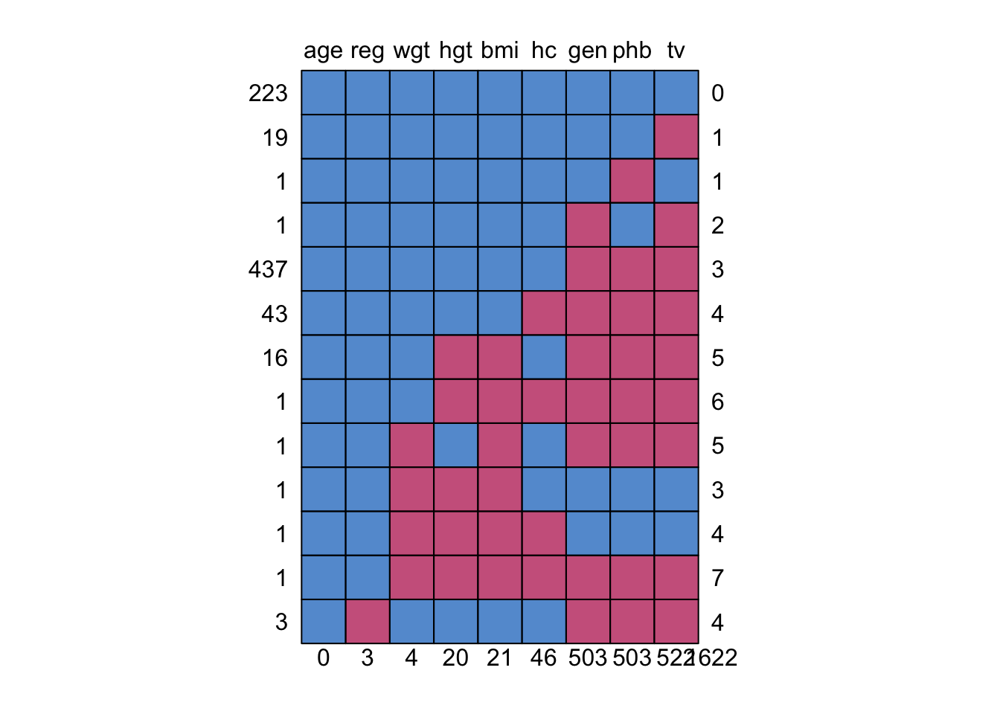
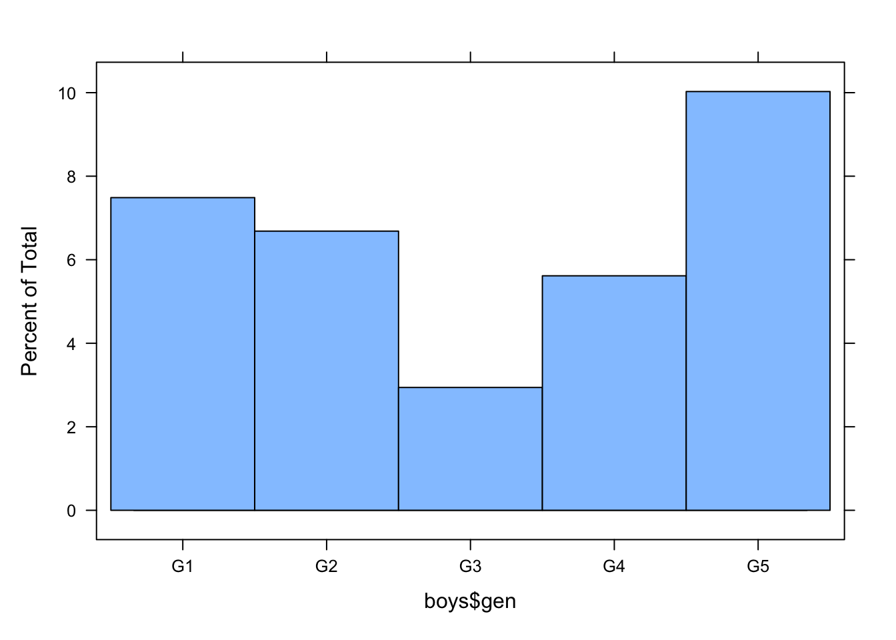
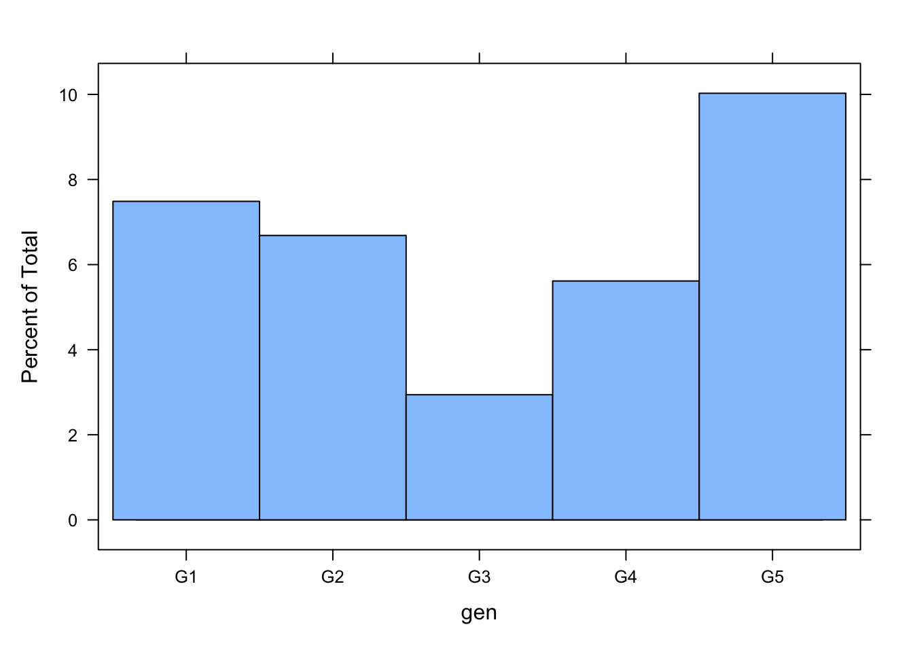
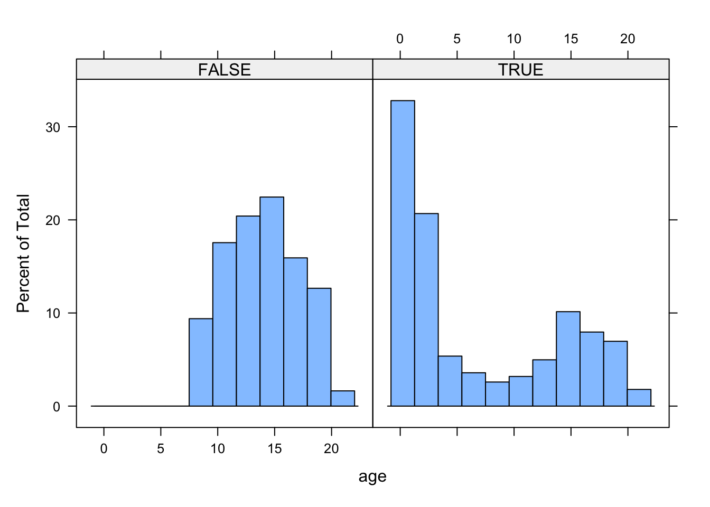
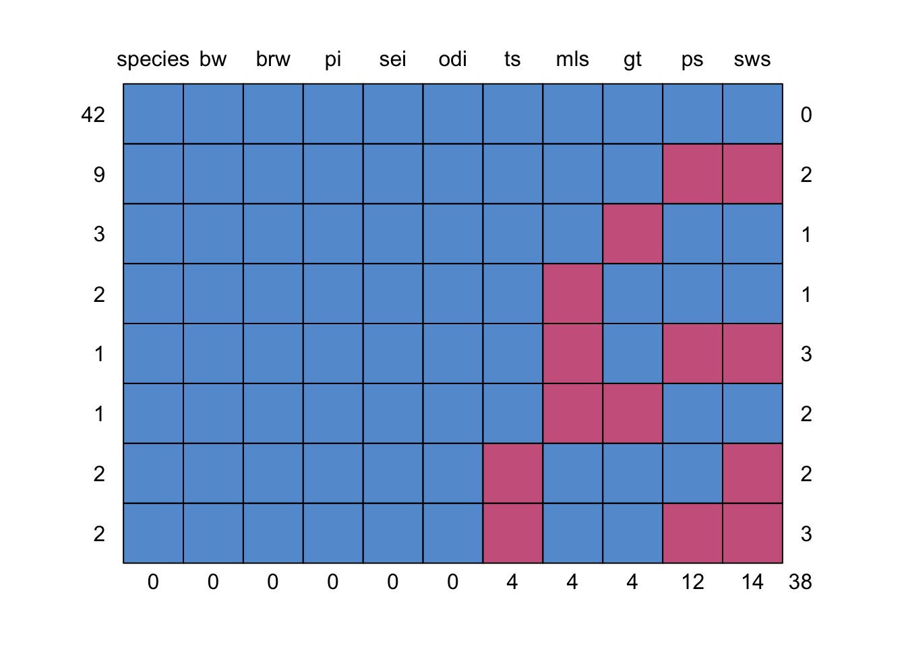
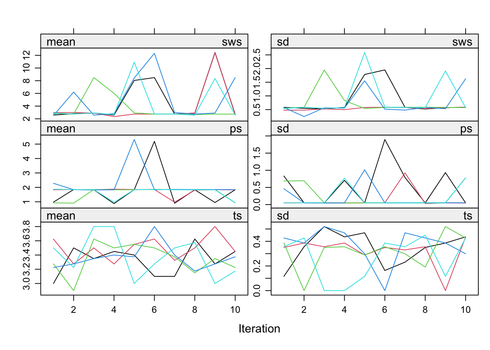
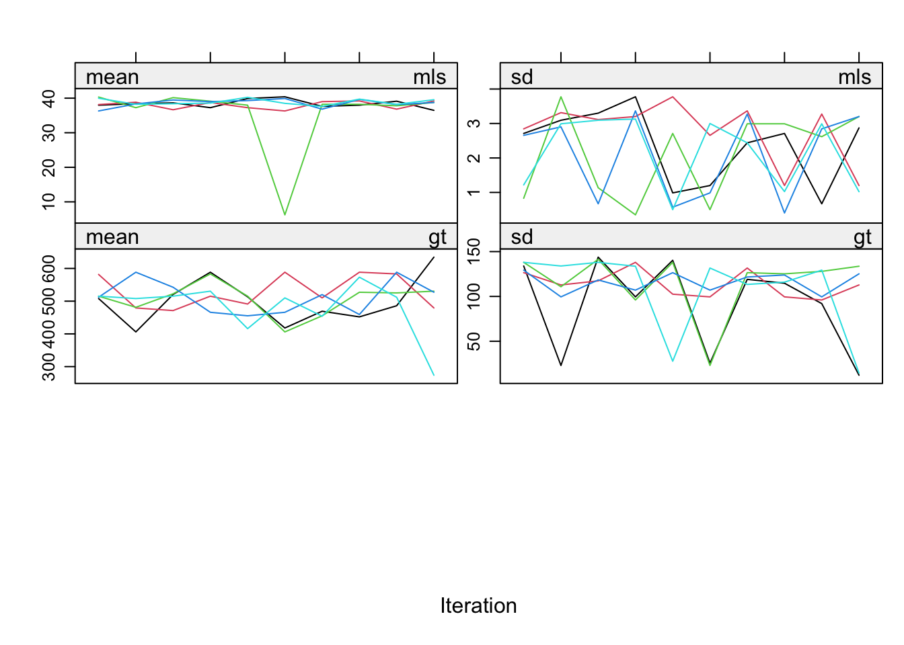
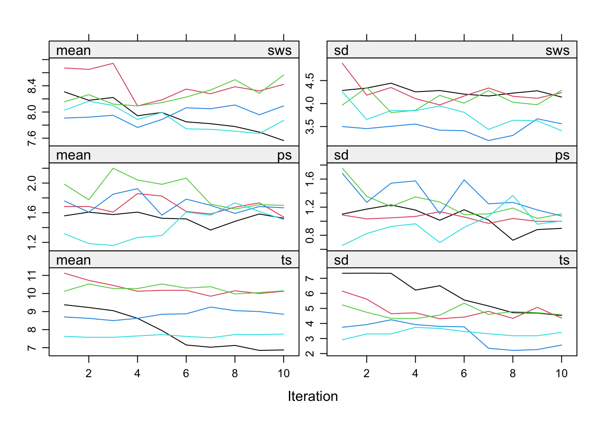
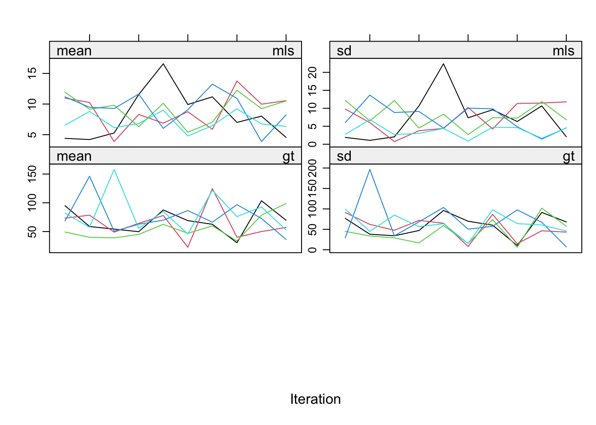

require(mice)
require(lattice)
set.seed(123)mice: The imputation and nonresponse models
Vignette 3 of 10
This is the third vignette in a series of ten.
In this vignette we will focus on analyzing the relation between the data and the missingness. For non-R users: In R one can simply call the help function for any specific function func by typing help(func). E.g. help(mice) directs you to the help page of the mice function.
1. Open R and load the packages mice and lattice. Also, fix the random seed.
We choose seed value 123. This is an arbitrary value; any value would be an equally good seed value. Fixing the random seed enables you (and others) to exactly replicate anything that involves random number generators. If you set the seed in your R instance to 123, you will get the exact same results and plots as we present in this document.
2. The boys dataset is part of mice. It is a subset of a large Dutch dataset containing growth measures from the Fourth Dutch Growth Study. Inspect the help for boys dataset and make yourself familiar with its contents.
To learn more about the contents of the data, use one of the two following help commands:
help(boys)
?boys3. Get an overview of the data. Find information about the size of the data, the variables measured and the amount of missingness.
head(boys) age hgt wgt bmi hc gen phb tv reg
3 0.035 50.1 3.650 14.54 33.7 <NA> <NA> NA south
4 0.038 53.5 3.370 11.77 35.0 <NA> <NA> NA south
18 0.057 50.0 3.140 12.56 35.2 <NA> <NA> NA south
23 0.060 54.5 4.270 14.37 36.7 <NA> <NA> NA south
28 0.062 57.5 5.030 15.21 37.3 <NA> <NA> NA south
36 0.068 55.5 4.655 15.11 37.0 <NA> <NA> NA southnrow(boys)[1] 748summary(boys) age hgt wgt bmi
Min. : 0.035 Min. : 50.00 Min. : 3.14 Min. :11.77
1st Qu.: 1.581 1st Qu.: 84.88 1st Qu.: 11.70 1st Qu.:15.90
Median :10.505 Median :147.30 Median : 34.65 Median :17.45
Mean : 9.159 Mean :132.15 Mean : 37.15 Mean :18.07
3rd Qu.:15.267 3rd Qu.:175.22 3rd Qu.: 59.58 3rd Qu.:19.53
Max. :21.177 Max. :198.00 Max. :117.40 Max. :31.74
NA's :20 NA's :4 NA's :21
hc gen phb tv reg
Min. :33.70 G1 : 56 P1 : 63 Min. : 1.00 north: 81
1st Qu.:48.12 G2 : 50 P2 : 40 1st Qu.: 4.00 east :161
Median :53.00 G3 : 22 P3 : 19 Median :12.00 west :239
Mean :51.51 G4 : 42 P4 : 32 Mean :11.89 south:191
3rd Qu.:56.00 G5 : 75 P5 : 50 3rd Qu.:20.00 city : 73
Max. :65.00 NA's:503 P6 : 41 Max. :25.00 NA's : 3
NA's :46 NA's:503 NA's :522 4. As we have seen before, the function md.pattern() can be used to display all different missing data patterns. How many different missing data patterns are present in the boys dataframe and which pattern occurs most frequently in the data?
md.pattern(boys)
age reg wgt hgt bmi hc gen phb tv
223 1 1 1 1 1 1 1 1 1 0
19 1 1 1 1 1 1 1 1 0 1
1 1 1 1 1 1 1 1 0 1 1
1 1 1 1 1 1 1 0 1 0 2
437 1 1 1 1 1 1 0 0 0 3
43 1 1 1 1 1 0 0 0 0 4
16 1 1 1 0 0 1 0 0 0 5
1 1 1 1 0 0 0 0 0 0 6
1 1 1 0 1 0 1 0 0 0 5
1 1 1 0 0 0 1 1 1 1 3
1 1 1 0 0 0 0 1 1 1 4
1 1 1 0 0 0 0 0 0 0 7
3 1 0 1 1 1 1 0 0 0 4
0 3 4 20 21 46 503 503 522 1622There are 13 patterns in total, with the pattern where gen, phb and tv are missing occurring the most.
5. How many patterns occur for which the variable gen (genital Tannerstage) is missing?
mpat <- md.pattern(boys)
sum(mpat[, "gen"] == 0)[1] 8Answer: 8 patterns (503 cases)
6. Let us focus more precisely on the missing data patterns. Does the missing data of gen depend on age? One could for example check this by making a histogram of age separately for the cases with known genital stages and for cases with missing genital stages.
To create said histogram in R, a missingness indicator for gen has to be created. A missingness indicator is a dummy variable with value 1 for observed values (in this case genital status) and 0 for missing values. Create a missingness indicator for gen by typing
R <- is.na(boys$gen)
R [1] TRUE TRUE TRUE TRUE TRUE TRUE TRUE TRUE TRUE TRUE TRUE TRUE
[13] TRUE TRUE TRUE TRUE TRUE TRUE TRUE TRUE TRUE TRUE TRUE TRUE
[25] TRUE TRUE TRUE TRUE TRUE TRUE TRUE TRUE TRUE TRUE TRUE TRUE
[37] TRUE TRUE TRUE TRUE TRUE TRUE TRUE TRUE TRUE TRUE TRUE TRUE
[49] TRUE TRUE TRUE TRUE TRUE TRUE TRUE TRUE TRUE TRUE TRUE TRUE
[61] TRUE TRUE TRUE TRUE TRUE TRUE TRUE TRUE TRUE TRUE TRUE TRUE
[73] TRUE TRUE TRUE TRUE TRUE TRUE TRUE TRUE TRUE TRUE TRUE TRUE
[85] TRUE TRUE TRUE TRUE TRUE TRUE TRUE TRUE TRUE TRUE TRUE TRUE
[97] TRUE TRUE TRUE TRUE TRUE TRUE TRUE TRUE TRUE TRUE TRUE TRUE
[109] TRUE TRUE TRUE TRUE TRUE TRUE TRUE TRUE TRUE TRUE TRUE TRUE
[121] TRUE TRUE TRUE TRUE TRUE TRUE TRUE TRUE TRUE TRUE TRUE TRUE
[133] TRUE TRUE TRUE TRUE TRUE TRUE TRUE TRUE TRUE TRUE TRUE TRUE
[145] TRUE TRUE TRUE TRUE TRUE TRUE TRUE TRUE TRUE TRUE TRUE TRUE
[157] TRUE TRUE TRUE TRUE TRUE TRUE TRUE TRUE TRUE TRUE TRUE TRUE
[169] TRUE TRUE TRUE TRUE TRUE TRUE TRUE TRUE TRUE TRUE TRUE TRUE
[181] TRUE TRUE TRUE TRUE TRUE TRUE TRUE TRUE TRUE TRUE TRUE TRUE
[193] TRUE TRUE TRUE TRUE TRUE TRUE TRUE TRUE TRUE TRUE TRUE TRUE
[205] TRUE TRUE TRUE TRUE TRUE TRUE TRUE TRUE TRUE TRUE TRUE TRUE
[217] TRUE TRUE TRUE TRUE TRUE TRUE TRUE TRUE TRUE TRUE TRUE TRUE
[229] TRUE TRUE TRUE TRUE TRUE TRUE TRUE TRUE TRUE TRUE TRUE TRUE
[241] TRUE TRUE TRUE TRUE TRUE TRUE TRUE TRUE TRUE TRUE TRUE TRUE
[253] TRUE TRUE TRUE TRUE TRUE TRUE TRUE TRUE TRUE TRUE TRUE TRUE
[265] TRUE TRUE TRUE TRUE TRUE TRUE TRUE TRUE TRUE TRUE TRUE TRUE
[277] TRUE TRUE TRUE TRUE TRUE TRUE TRUE TRUE TRUE TRUE TRUE TRUE
[289] TRUE TRUE TRUE TRUE TRUE TRUE TRUE TRUE TRUE TRUE TRUE TRUE
[301] TRUE TRUE TRUE TRUE TRUE TRUE TRUE TRUE TRUE TRUE TRUE TRUE
[313] TRUE TRUE TRUE TRUE TRUE TRUE TRUE TRUE FALSE TRUE TRUE TRUE
[325] FALSE FALSE FALSE TRUE TRUE FALSE FALSE FALSE TRUE TRUE FALSE FALSE
[337] FALSE FALSE FALSE FALSE FALSE FALSE FALSE FALSE FALSE FALSE FALSE FALSE
[349] FALSE FALSE TRUE FALSE FALSE FALSE FALSE FALSE TRUE TRUE FALSE FALSE
[361] TRUE TRUE FALSE FALSE FALSE TRUE FALSE FALSE TRUE FALSE FALSE FALSE
[373] FALSE FALSE TRUE FALSE FALSE FALSE FALSE FALSE TRUE FALSE TRUE FALSE
[385] FALSE FALSE FALSE FALSE TRUE FALSE FALSE TRUE FALSE FALSE FALSE FALSE
[397] FALSE FALSE TRUE FALSE FALSE FALSE FALSE TRUE TRUE FALSE TRUE FALSE
[409] FALSE FALSE TRUE FALSE FALSE FALSE TRUE FALSE FALSE FALSE FALSE FALSE
[421] FALSE FALSE FALSE FALSE TRUE FALSE FALSE FALSE TRUE FALSE TRUE FALSE
[433] FALSE FALSE TRUE FALSE FALSE FALSE FALSE TRUE FALSE TRUE TRUE FALSE
[445] FALSE FALSE FALSE FALSE TRUE FALSE TRUE TRUE FALSE FALSE FALSE FALSE
[457] TRUE TRUE FALSE FALSE FALSE FALSE FALSE TRUE TRUE TRUE TRUE TRUE
[469] FALSE FALSE FALSE TRUE TRUE FALSE FALSE TRUE TRUE TRUE FALSE FALSE
[481] FALSE FALSE FALSE TRUE FALSE TRUE FALSE TRUE FALSE FALSE TRUE FALSE
[493] FALSE TRUE FALSE TRUE TRUE TRUE FALSE TRUE FALSE FALSE TRUE TRUE
[505] FALSE TRUE FALSE FALSE TRUE FALSE TRUE FALSE FALSE TRUE TRUE FALSE
[517] TRUE TRUE FALSE FALSE FALSE FALSE FALSE FALSE TRUE TRUE FALSE TRUE
[529] FALSE FALSE TRUE FALSE FALSE TRUE TRUE FALSE TRUE FALSE TRUE TRUE
[541] TRUE FALSE TRUE FALSE TRUE FALSE FALSE TRUE FALSE FALSE TRUE FALSE
[553] FALSE TRUE TRUE TRUE FALSE TRUE TRUE FALSE FALSE TRUE FALSE TRUE
[565] TRUE TRUE FALSE FALSE TRUE TRUE TRUE TRUE FALSE TRUE FALSE TRUE
[577] FALSE FALSE FALSE TRUE FALSE FALSE FALSE TRUE FALSE FALSE FALSE TRUE
[589] TRUE TRUE FALSE TRUE TRUE TRUE FALSE FALSE FALSE FALSE TRUE TRUE
[601] FALSE TRUE FALSE TRUE FALSE FALSE FALSE TRUE TRUE FALSE TRUE FALSE
[613] FALSE TRUE FALSE FALSE FALSE TRUE TRUE FALSE FALSE FALSE FALSE FALSE
[625] TRUE FALSE FALSE TRUE TRUE TRUE FALSE FALSE FALSE FALSE TRUE TRUE
[637] TRUE FALSE FALSE FALSE TRUE TRUE FALSE TRUE TRUE FALSE FALSE TRUE
[649] TRUE TRUE TRUE TRUE FALSE TRUE FALSE TRUE TRUE TRUE FALSE TRUE
[661] TRUE TRUE TRUE FALSE TRUE TRUE TRUE FALSE FALSE TRUE FALSE TRUE
[673] FALSE TRUE TRUE TRUE FALSE FALSE FALSE TRUE FALSE TRUE TRUE FALSE
[685] TRUE TRUE TRUE FALSE TRUE FALSE TRUE TRUE TRUE FALSE FALSE TRUE
[697] TRUE TRUE FALSE FALSE FALSE TRUE FALSE TRUE TRUE TRUE TRUE FALSE
[709] FALSE FALSE TRUE TRUE FALSE TRUE TRUE TRUE FALSE FALSE TRUE FALSE
[721] FALSE TRUE TRUE FALSE FALSE TRUE FALSE TRUE FALSE FALSE TRUE TRUE
[733] FALSE FALSE FALSE TRUE FALSE FALSE TRUE FALSE FALSE TRUE TRUE TRUE
[745] TRUE TRUE TRUE TRUEAs we can see, the missingness indicator tells us for each value in gen whether it is missing (TRUE) or observed (FALSE).
A histogram can be made with the function histogram().
histogram(boys$gen)
or, equivalently, one could use
histogram(~ gen, data = boys)
Writing the latter line of code for plots is more efficient than selecting every part of the boys data with the boys$... command, especially if plots become more advanced. The code for a conditional histogram of age given R is
histogram(~age|R, data=boys)
The histogram shows that the missingness in gen is not equally distributed across age.
7. Impute the boys dataset with mice using all default settings and name the mids (multiply imputed data set) object imp1.
imp1 <- mice(boys, print=FALSE)8. Compare the means of the imputed data with the means of the incomplete data. One can use the function complete() with a mids-object as argument to obtain an imputed dataset. As default, the first imputed dataset will be given by this function.
summary(boys) age hgt wgt bmi
Min. : 0.035 Min. : 50.00 Min. : 3.14 Min. :11.77
1st Qu.: 1.581 1st Qu.: 84.88 1st Qu.: 11.70 1st Qu.:15.90
Median :10.505 Median :147.30 Median : 34.65 Median :17.45
Mean : 9.159 Mean :132.15 Mean : 37.15 Mean :18.07
3rd Qu.:15.267 3rd Qu.:175.22 3rd Qu.: 59.58 3rd Qu.:19.53
Max. :21.177 Max. :198.00 Max. :117.40 Max. :31.74
NA's :20 NA's :4 NA's :21
hc gen phb tv reg
Min. :33.70 G1 : 56 P1 : 63 Min. : 1.00 north: 81
1st Qu.:48.12 G2 : 50 P2 : 40 1st Qu.: 4.00 east :161
Median :53.00 G3 : 22 P3 : 19 Median :12.00 west :239
Mean :51.51 G4 : 42 P4 : 32 Mean :11.89 south:191
3rd Qu.:56.00 G5 : 75 P5 : 50 3rd Qu.:20.00 city : 73
Max. :65.00 NA's:503 P6 : 41 Max. :25.00 NA's : 3
NA's :46 NA's:503 NA's :522 summary(complete(imp1)) age hgt wgt bmi
Min. : 0.035 Min. : 50.00 Min. : 3.14 Min. :11.77
1st Qu.: 1.581 1st Qu.: 83.53 1st Qu.: 11.85 1st Qu.:15.89
Median :10.505 Median :145.75 Median : 34.55 Median :17.39
Mean : 9.159 Mean :131.12 Mean : 37.11 Mean :18.03
3rd Qu.:15.267 3rd Qu.:175.00 3rd Qu.: 59.35 3rd Qu.:19.48
Max. :21.177 Max. :198.00 Max. :117.40 Max. :31.74
hc gen phb tv reg
Min. :33.70 G1:305 P1:325 Min. : 1.000 north: 82
1st Qu.:48.45 G2:149 P2:112 1st Qu.: 2.000 east :161
Median :53.20 G3: 55 P3: 45 Median : 3.000 west :240
Mean :51.64 G4: 83 P4: 69 Mean : 8.239 south:192
3rd Qu.:56.00 G5:156 P5:112 3rd Qu.:15.000 city : 73
Max. :65.00 P6: 85 Max. :25.000 Most means are roughly equal, except the mean of tv, which is much lower in the first imputed data set, when compared to the incomplete data. This makes sense because most genital measures are unobserved for the lower ages. When imputing these values, the means should decrease.
Investigating univariate properties by using functions such as summary(), may not be ideal in the case of hundreds of variables. To extract just the information you need, for all imputed datasets, we can make use of the with() function. To obtain summaries for each imputed tv only, type
summary(with(imp1, mean(tv)))Warning: 'tidy.numeric' is deprecated.
See help("Deprecated")
Warning: 'tidy.numeric' is deprecated.
See help("Deprecated")
Warning: 'tidy.numeric' is deprecated.
See help("Deprecated")
Warning: 'tidy.numeric' is deprecated.
See help("Deprecated")
Warning: 'tidy.numeric' is deprecated.
See help("Deprecated")# A tibble: 5 × 2
x df.residual
<dbl> <dbl>
1 8.24 Inf
2 8.52 Inf
3 8.39 Inf
4 8.52 Inf
5 8.45 InfThe importance of the imputation model
The mammalsleep dataset is part of mice. It contains the Allison and Cicchetti (1976) data for mammalian species. To learn more about this data, type
help(mammalsleep)9. Get an overview of the data. Find information about the size of the data, the variables measured and the amount of missingness.
head(mammalsleep) species bw brw sws ps ts mls gt pi sei odi
1 African elephant 6654.000 5712.0 NA NA 3.3 38.6 645 3 5 3
2 African giant pouched rat 1.000 6.6 6.3 2.0 8.3 4.5 42 3 1 3
3 Arctic Fox 3.385 44.5 NA NA 12.5 14.0 60 1 1 1
4 Arctic ground squirrel 0.920 5.7 NA NA 16.5 NA 25 5 2 3
5 Asian elephant 2547.000 4603.0 2.1 1.8 3.9 69.0 624 3 5 4
6 Baboon 10.550 179.5 9.1 0.7 9.8 27.0 180 4 4 4summary(mammalsleep) species bw brw
African elephant : 1 Min. : 0.005 Min. : 0.14
African giant pouched rat: 1 1st Qu.: 0.600 1st Qu.: 4.25
Arctic Fox : 1 Median : 3.342 Median : 17.25
Arctic ground squirrel : 1 Mean : 198.790 Mean : 283.13
Asian elephant : 1 3rd Qu.: 48.202 3rd Qu.: 166.00
Baboon : 1 Max. :6654.000 Max. :5712.00
(Other) :56
sws ps ts mls
Min. : 2.100 Min. :0.000 Min. : 2.60 Min. : 2.000
1st Qu.: 6.250 1st Qu.:0.900 1st Qu.: 8.05 1st Qu.: 6.625
Median : 8.350 Median :1.800 Median :10.45 Median : 15.100
Mean : 8.673 Mean :1.972 Mean :10.53 Mean : 19.878
3rd Qu.:11.000 3rd Qu.:2.550 3rd Qu.:13.20 3rd Qu.: 27.750
Max. :17.900 Max. :6.600 Max. :19.90 Max. :100.000
NA's :14 NA's :12 NA's :4 NA's :4
gt pi sei odi
Min. : 12.00 Min. :1.000 Min. :1.000 Min. :1.000
1st Qu.: 35.75 1st Qu.:2.000 1st Qu.:1.000 1st Qu.:1.000
Median : 79.00 Median :3.000 Median :2.000 Median :2.000
Mean :142.35 Mean :2.871 Mean :2.419 Mean :2.613
3rd Qu.:207.50 3rd Qu.:4.000 3rd Qu.:4.000 3rd Qu.:4.000
Max. :645.00 Max. :5.000 Max. :5.000 Max. :5.000
NA's :4 str(mammalsleep)'data.frame': 62 obs. of 11 variables:
$ species: Factor w/ 62 levels "African elephant",..: 1 2 3 4 5 6 7 8 9 10 ...
$ bw : num 6654 1 3.38 0.92 2547 ...
$ brw : num 5712 6.6 44.5 5.7 4603 ...
$ sws : num NA 6.3 NA NA 2.1 9.1 15.8 5.2 10.9 8.3 ...
$ ps : num NA 2 NA NA 1.8 0.7 3.9 1 3.6 1.4 ...
$ ts : num 3.3 8.3 12.5 16.5 3.9 9.8 19.7 6.2 14.5 9.7 ...
$ mls : num 38.6 4.5 14 NA 69 27 19 30.4 28 50 ...
$ gt : num 645 42 60 25 624 180 35 392 63 230 ...
$ pi : int 3 3 1 5 3 4 1 4 1 1 ...
$ sei : int 5 1 1 2 5 4 1 5 2 1 ...
$ odi : int 3 3 1 3 4 4 1 4 1 1 ...As we have seen before, the function md.pattern() can be used to display all different missing data patterns. How many different missing data patterns are present in the mammalsleep dataframe and which pattern occurs most frequently in the data?
md.pattern(mammalsleep)
species bw brw pi sei odi ts mls gt ps sws
42 1 1 1 1 1 1 1 1 1 1 1 0
9 1 1 1 1 1 1 1 1 1 0 0 2
3 1 1 1 1 1 1 1 1 0 1 1 1
2 1 1 1 1 1 1 1 0 1 1 1 1
1 1 1 1 1 1 1 1 0 1 0 0 3
1 1 1 1 1 1 1 1 0 0 1 1 2
2 1 1 1 1 1 1 0 1 1 1 0 2
2 1 1 1 1 1 1 0 1 1 0 0 3
0 0 0 0 0 0 4 4 4 12 14 38Answer: 8 patterns in total, with the pattern where everything is observed occurring the most (42 times).
10. Generate five imputed datasets with the default method pmm. Give the algorithm 10 iterations.
imp <- mice(mammalsleep, maxit = 10, print=F)Warning: Number of logged events: 525Inspect the trace lines
plot(imp)

11. Perform a regression analysis on the imputed dataset with sws as dependent variable and log(bw) and odi as independent variables.
fit1 <- with(imp, lm(sws ~ log10(bw) + odi), print=F)12. Pool the regression analysis and inspect the pooled analysis.
pool(fit1)Class: mipo m = 5
term m estimate ubar b t dfcom df
1 (Intercept) 5 9.8541774 0.67165805 0.350563293 1.09233400 59 15.25266
2 log10(bw) 5 -1.6037986 0.09481760 0.071400400 0.18049807 59 11.15164
3 odi 5 -0.5128291 0.08397637 0.003868949 0.08861911 59 52.16868
riv lambda fmi
1 0.62632459 0.38511659 0.45249127
2 0.90363481 0.47468916 0.54892946
3 0.05528626 0.05238982 0.08674301summary(pool(fit1)) term estimate std.error statistic df p.value
1 (Intercept) 9.8541774 1.0451478 9.428501 15.25266 9.345076e-08
2 log10(bw) -1.6037986 0.4248506 -3.774970 11.15164 3.001831e-03
3 odi -0.5128291 0.2976896 -1.722697 52.16868 9.086711e-02The fmi and lambda are much too high. This is due to species being included in the imputation model. Because there are 62 species and mice automatically converts factors (categorical variables) to dummy variables, each species is modeled by its own imputation model.
13. Impute mammalsleep again, but now exclude species from the data. Name the new imputed dataset impnew.
impnew <- mice(mammalsleep[ , -1], maxit = 10, print = F)Warning: Number of logged events: 2514. Compute and pool the regression analysis again.
fit2 <- with(impnew, lm(sws ~ log10(bw) + odi))
pool(fit2)Class: mipo m = 5
term m estimate ubar b t dfcom df
1 (Intercept) 5 11.4527165 0.61190409 0.139559346 0.77937530 59 29.54143
2 log10(bw) 5 -1.1746524 0.08638216 0.001638406 0.08834825 59 55.44294
3 odi 5 -0.8519964 0.07650542 0.024393675 0.10577783 59 23.06225
riv lambda fmi
1 0.27368867 0.21487878 0.26313242
2 0.02276034 0.02225384 0.05571369
3 0.38261877 0.27673483 0.33223772summary(pool(fit2)) term estimate std.error statistic df p.value
1 (Intercept) 11.4527165 0.8828223 12.972844 29.54143 9.931861e-14
2 log10(bw) -1.1746524 0.2972343 -3.951940 55.44294 2.215440e-04
3 odi -0.8519964 0.3252350 -2.619633 23.06225 1.530114e-02Note that the fmi and lambda have dramatically decreased. The imputation model has been greatly improved.
15. Plot the trace lines for impnew
plot(impnew)

Even though the fraction of information missing due to nonresponse (fmi) and the relative increase in variance due to nonresponse (lambda) are nice and low, the convergence turns out to be a real problem. The reason is the structure in the data. Total sleep (ts) is the sum of paradoxical sleep (ps) and short wave sleep (sws). This relation is ignored in the imputations, but it is necessary to take this relation into account. mice offers a routine called passive imputation, which allows users to take transformations, combinations and recoded variables into account when imputing their data.
We explain passive imputation in detail in the this vignette.
Conclusion
We have seen that the practical execution of multiple imputation and pooling is straightforward with the R package mice. The package is designed to allow you to assess and control the imputations themselves, the convergence of the algorithm and the distributions and multivariate relations of the observed and imputed data.
It is important to ‘gain’ this control as a user. After all, we are imputing values and we aim to properly address the uncertainty about the missingness problem.
- End of Vignette